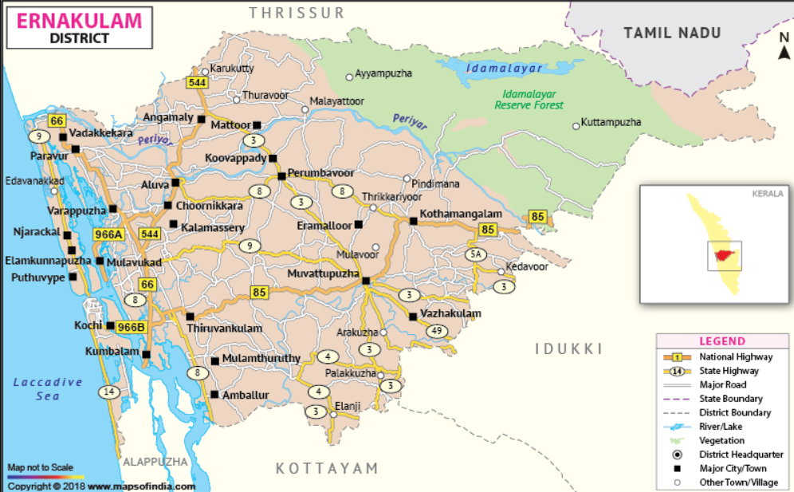

Ernakulam
Tourist Destinations
BhoothathanKettu Dam & Reserve Forest
Large blocks of unshaped stones are placed on both sides of the Periyar River to form the dam, making it look like a natural dam built by superhumans. The name Bhoothathan Kettu, means "monster fort"; past generations believed it was built by a Bhootham (monster).


chottanikkara Temple
The Chottanikkara (correction of Jyotiannakkara) Devi Temple is a famous temple of mother goddess Bhagavati. She is a form of Mahalakshmi. She is believed to be residing in Chottanikkara along with her husband Maha Vishnu. The temple is located at Chottanikkara, a southern suburb of the city of Kochi in the state of Kerala, India and is one of the most popular temples in the state. In terms of temple architecture, Chottanikkara temple stands out to be an ultimate testimonial for the ancient vishwakarma sthapathis (wooden sculpture) along with Sabarimala temple. Sree Mahamaya Bhagavati (Adi Parashakti), the goddess of saraswati, Lakshmi and Parvati is one of the most popular deities in Kerala and the supreme mother goddess in Hinduism.
Hill Palace
Hill Palace is an archaeological museum and palace located in the Tripunithura neighbourhood of Kochi city in the Indian state of Kerala. It is the largest archeological museum in the state and was the imperial administrative office and official residence of the Cochin Maharaja. Built in 1865, the palace complex consists of 49 buildings in the traditional architectural style, spreading across 54 acres (220,000 m2). The complex has an archaeological museum, a heritage museum, a deer park, a pre-historic park and a children’s park.[1] The campus of the museum is home to several rare species of medicinal plants. Presently the palace has been converted into a museum by The Kerala State Archaeology Department and is open to public.